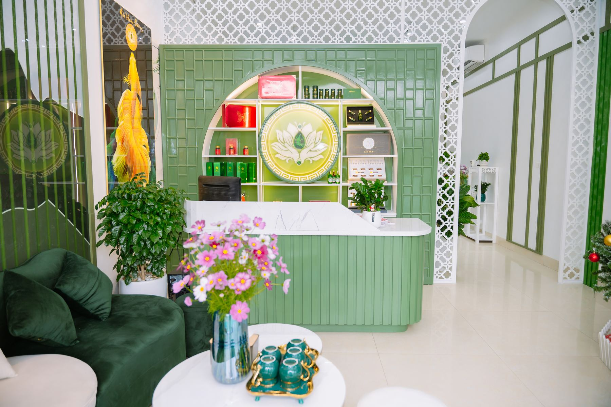

HỆ THỐNG ĐÔNG Y TRỊ LIỆU & DƯỠNG SINH
Hồi Xuân Đường.
Trị liệu từ căn gốc — Phục hồi sinh lực.
Tiếp cận cơ thể từ nền tảng y học cổ truyền. Đả thông kinh lạc, bồi bổ khí huyết — không chỉ giảm đau tạm thời mà phục hồi thể trạng bền vững.
Cơ xương khớpThần kinh & Giấc ngủDưỡng sinh Ngũ tạngTán hàn ẩm